Quantas vezes você foi a mais preparada da sala e a menos lembrada?
O Além do Feed nasceu dessa pergunta.
Se você está aqui, é porque já sabe que um post sozinho não muda a forma como te percebem
marcaé o que vive em todos os pontos de contato
reunião
e-mail
o jeito de entrar na sala
LinkedIn
café
Instagram
Marty Neumeierautor de The Brand Gap
"Marca é o que a pessoa sente, lá no fundo, sobre um produto, um serviço ou uma empresa."
The Brand Gap · 2003 · foto: Wikimedia Commons, CC BY-SA 4.0
Você é o maior ativo da sua carreira
O que os números dizem sobre nós
Mais preparadas. Menos vistas
21,3%
das mulheres com 25 anos ou mais têm ensino superior completo. Entre os homens, 16,8%. A gente estuda mais.
39,3%
dos cargos de gerência do país são ocupados por mulheres. Seis em cada dez são deles.
R$ 78,80
é quanto uma mulher ganha num cargo de gerência pra cada R$ 100 pagos a um homem no mesmo cargo.
Fonte: IBGE, Estatísticas de Gênero: indicadores sociais das mulheres no Brasil, 3ª edição, divulgada em 8 de março de 2024.
E você, já se viu em um desses números?
Eu já.
E quando chega a hora de falar de si?
Mesmo desempenho. Avaliação mais baixa
Em experimentos com milhares de pessoas, mulheres descreveram o próprio trabalho de forma menos favorável que homens com resultado idêntico. Mesmo quando sabiam exatamente como tinham ido. Mesmo quando dizer a verdade sobre si valia dinheiro.
lacuna de autopromoção
Fonte: Christine L. Exley e Judd B. Kessler (2022), "The Gender Gap in Self-Promotion", The Quarterly Journal of Economics, vol. 137, n. 3.
Competência a gente já tem. O que falta é tradução
O que eu escuto nos briefings
Você já é vista como competente. Só que essa percepção não conta a história toda
01Você fala com diretoria, equipe e cliente, e não sabe costurar isso numa identidade só;
02tem repertório e experiência de sobra, mas falta estrutura pra comunicar com clareza;
03sente que falar de si é se promover, e aí prefere o silêncio;
04posta quando dá, cada post com uma cara, e nenhum diz quem você é.
De onde eu venho
Já são quase dez anos construindo marcas pessoais. E no meio desse caminho, muitas mulheres passaram por mim com muito a oferecer e sem saber como se posicionar
O que eu mais ouvia era: "pela primeira vez, me senti ouvida".
Foi daí que nasceu o Além do Feed.
Jornada Além do Feed
A sua marca, escrita
Consultoria de marca pessoal pra mulheres que querem se posicionar com verdade e estratégia.
O meu método
Escuta antes de estratégia
Eu não começo com plano de conteúdo. Começo com uma pergunta simples: o que está por trás de quem você é? A estratégia só faz sentido depois disso, porque nasce de você, e não de um template que serve pra qualquer pessoa.
Escutar
O que você diz e o que fica no silêncio do briefing. É ali que costuma morar a essência.
Traduzir
Identidade em posicionamento, com repertório cultural e base teórica.
Construir
Uma marca que existe no mundo, em cada ponto de contato, e não só no PDF.
A jornada foi feita pra um tipo de mulher
É pra você que
já é vista como competente, mas sente que essa percepção não conta a história toda;
fala com públicos muito diferentes e não sabe costurar isso numa identidade só;
tem repertório e experiência reais, e falta estrutura pra comunicar com clareza;
topa um processo real de autoconhecimento antes de qualquer estratégia.
Não é pra quem
quer um roteiro pronto pra copiar o que funciona com a concorrência;
prefere pular a escuta e ir direto pro passo a passo;
busca fórmula replicável, e não um posicionamento específico pra sua trajetória.
Como funciona
Do diagnóstico à entrega visual, em quatro etapas
01
Descoberta
Imersão na sua história, essência e ambições. Daqui sai a sua plataforma de marca: posicionamento, a mensagem que você carrega e o tom de voz que te traduz.
02
Direção
Uma estratégia de presença que integra o on e o offline, com dois encontros de acompanhamento ao longo de dois meses.
03
Autonomia
Direcionamentos, guias e ferramentas pra produzir os seus próprios conteúdos com segurança. Você termina pronta.
04
Registro
Ensaio fotográfico com direção criativa, captação de vídeos e o seu vídeo manifesto, tudo editado e entregue pronto.
O que sai da descoberta
A sua plataforma de marca, estruturada
Os blocos variam com o que cada marca pede. O que não varia: tudo sai da escuta e vira direção, nas redes e nos pontos de contato fora delas.
diagnóstico de identidade;
posicionamento e território de marca;
arquétipos e percepção;
buyer personas;
narrativa e tom de voz;
pilares de conteúdo;
brand assets e direção visual;
provas de autoridade;
arquitetura de conteúdo por canal;
aplicação nas redes e nos pontos de contato offline.
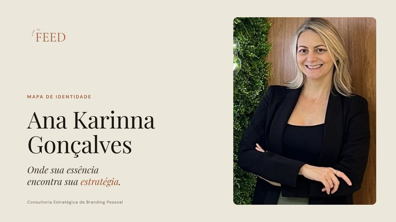
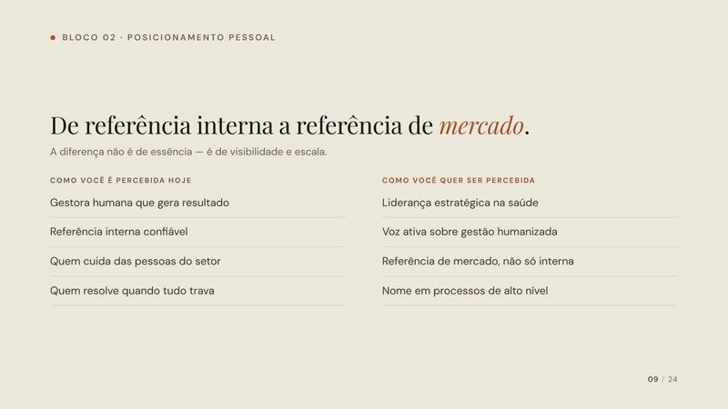
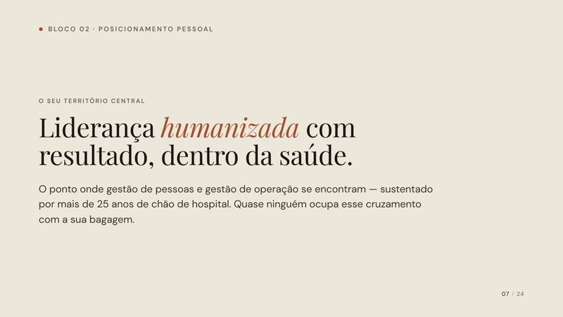
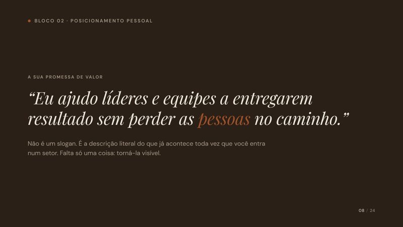
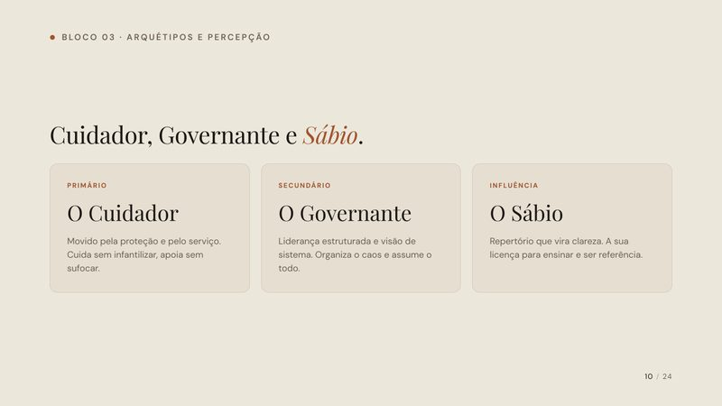
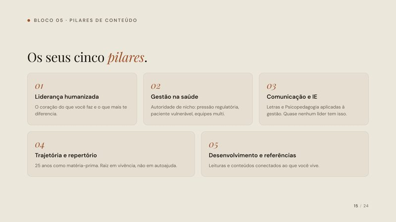
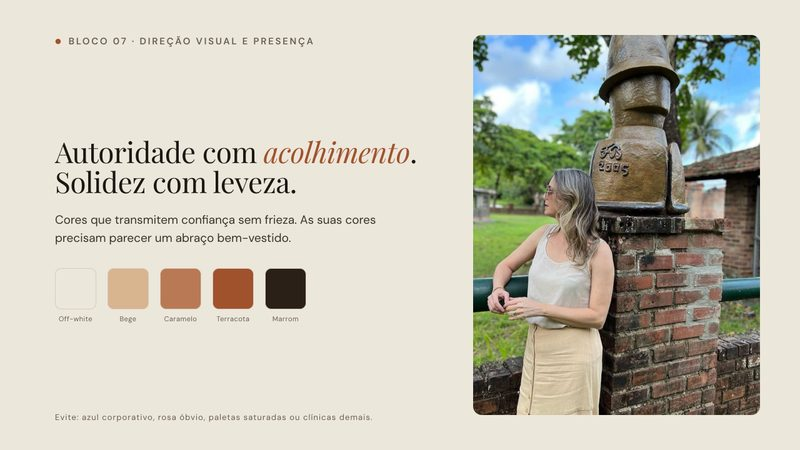
Plataforma de marca de Ana Karinna Gonçalves, jornada de 2026, com autorização dela.
O que sai da autonomia
Você não sai sabendo só quem é. Sai sabendo o que fazer amanhã
Guia de Stories10 sequências
construídas a partir da sua rotina real, story por story, pra quebrar a barreira de aparecer.
Guia de Posts10 ideias de feed
com formato, o que registrar e a legenda inteira já escrita na sua voz.
Guia de Vídeos10 roteiros
de ponto de vista, com os pontos onde você entra com a sua vivência e o que embasa cada fala.
Banco de pautas30 pautas
pros canais que fizerem sentido pra sua marca, cada uma com gancho, abordagem e desdobramento.
ManifestoO seu texto-base
a frase que resume a sua marca, escrita com você e gravada em vídeo.
CalendárioRitmo por canal
quantas vezes, onde e sobre o quê, num ritmo que cabe na sua semana.
O que sai do registro
Não só mais um ensaio, mas a sua marca em imagem
As fotos vêm depois, de propósito: elas traduzem a marca que já foi escrita. A fotógrafa também passou pelo Além do Feed, então chega sabendo quem você é, e os seus arquétipos, os seus objetivos e o seu tom de voz viram imagem. Fotos que facilitam a sua produção de conteúdo, mas, acima de tudo, em que você se enxerga.
O que muda em você
Clareza
sobre quem você é como marca e o que te diferencia;
Segurança
pra aparecer sem virar personagem de si mesma;
Autoconfiança
pra falar de si sem sentir que está se promovendo;
Autonomia
pra produzir sozinha, com direção, pelo tempo que quiser.
Quem vai escutar a sua história
Ray Guimarães
Sou jornalista há mais de dez anos, com MBA em Comunicação e Marketing Digital, estrategista de marca e fundadora da Astro, agência de comunicação em saúde com nove anos de estrada. Fui a primeira da minha família a entrar numa universidade. E o que eu ensino, eu faço: a minha própria marca foi escrita com o mesmo método que você vai viver.
Uma pergunta que eu sempre ouço
"Mas eu trabalho em empresa. Isso é pra mim?"
Olha, marca pessoal não nasceu pra quem empreende. O termo foi cunhado em 1997 por Tom Peters, num artigo chamado "The Brand Called You", escrito pra quem trabalha dentro de empresa. A tese dele era simples: a sua carreira é um negócio, e você é a marca.
Fonte: Tom Peters (1997), "The Brand Called You", Fast Company, edição 10.
"Será que funciona mesmo?"
O que elas mandam depois
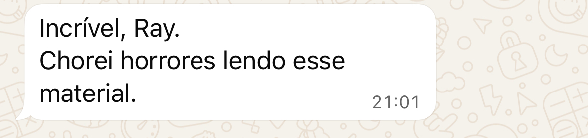
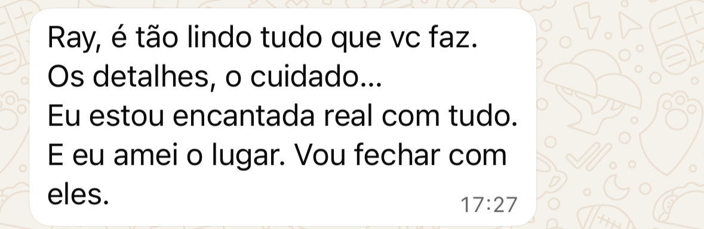
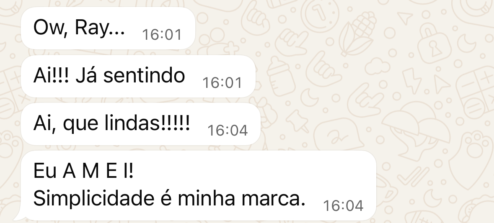
"Saí da jornada com clareza sobre quem eu sou e com as ferramentas pra comunicar isso sozinha. Não dependo de ninguém pra me posicionar hoje."
Karina · Jornada Além do Feed
5
vagas por vez
Cada jornada são três meses lado a lado, online ou presencial no Recife. Por isso, só cinco de cada vez, que é o que permite manter a profundidade que o processo pede.
Atualizando as vagas
Das cinco, duas já foram
Tenho três vagas abertas pra começar agora.
A outra pergunta que eu sempre ouço
"E quando a jornada acabar e eu tiver que produzir sozinha?"
Essa pergunta é justa, viu. Eu já vi marca linda, escrita com cuidado, ficar parada num PDF porque a semana chegou e a pessoa não sabia por onde começar. Foi por isso que este ano a jornada ganhou mais uma etapa.
A etapa nova
A sua marca, funcionando
Três meses de Folks System, sem custo, pra quem faz a jornada. Um sistema montado pra que a marca escrita vire conteúdo toda semana.
Hoje, a sua marca mora em cinco lugares
bloco de notas
ChatGPT
Canva
Instagram
planilha de pautas
um lugar só
o seu DNA, a sua IA, o seu molde e o que você já publicou
Por dentro do Folks System
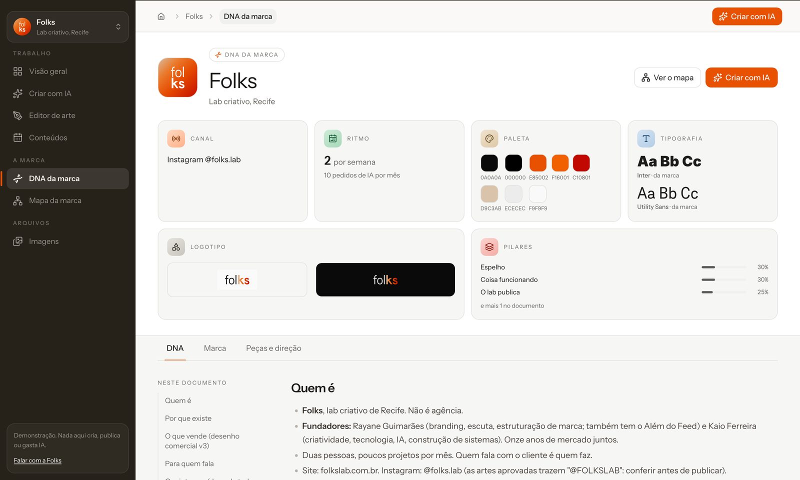
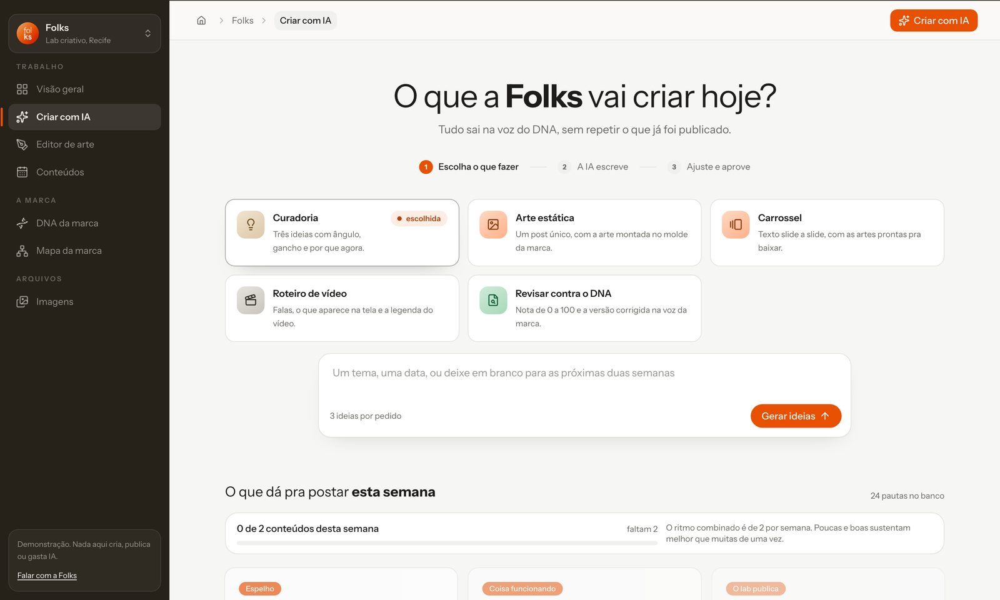
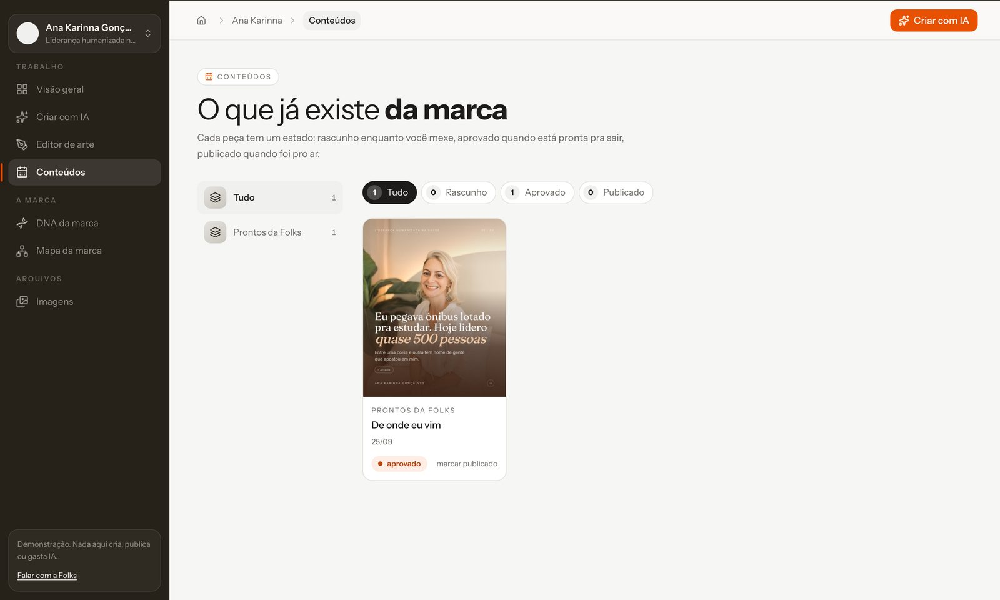
O DNA da marca: a sua plataforma de marca morando dentro do sistema, lida pela IA em cada pedido.
O mapa da marca: tudo ligado
O meu mapa, dentro do Folks System. Cada cartão puxa os outros: quando eu escolho um tema, o mapa mostra com quem ele fala, o que eu digo e o que prova.
Um tema: de onde vem a voz, com quem fala, o que diz.
Uma objeção: "dá pra fazer com IA" e as provas que respondem.
Uma pessoa: a competente invisível e tudo o que a marca tem pra dizer a ela.
O banco de pautas mora aqui
o seu Folks System
Ray GuimarãesVisão geralCriar com a sua IADNA da marcaMapa da marcaConteúdosImagens
O que dá pra postar esta semana51 pautas no banco · 4 já usadas
Ser vistaMarca pessoal não é só pra quem empreende: Tom Peters cunhou o termo em 97 escrevendo pra funcionário de empresaobjeção 1 · prova: caso Ana Karinna
DecodificandoMonica e o perfeccionismo que virou marca registradaArquétipos em Série · eu também caio nisso
Repertório e olharRepertório não se automatizaresposta ao "dá pra fazer com IA"
Ray por RayMinha mãe venceu um câncer dançandoleveza e inteireza
Criar a partir desta pautaIdeias · 3 ângulosArte · post únicoCarrossel · artes prontasStories · 4 telasRoteiro · vídeo curto
A sua IA sabe quem você é
o seu Folks System
Ray GuimarãesVisão geralCriar com a sua IADNA da marcaMapa da marcaConteúdosImagens
Decodificando
O que Fleabag ensina pra quem tem vergonha de falar de si
Ser vista
Você entrega resultado e ninguém vê. Eu também já fui essa.
Repertório e olhar
Em todo lugar que chego viajando, eu paro e olho.
Escolheu a pauta, ela escreve o carrossel na sua voz e monta a arte no seu molde.
Você entrega resultado e ninguém vê.
Bate meta, resolve o que ninguém resolve.
E na reunião, quem é lembrada é a outra.
Posicionamento começa por dentro.
A mesma pauta, duas IAs
Uma IA qualquer
5 dicas pra construir uma marca pessoal autêntica e alcançar a sua melhor versão ✨🚀
Serve pra qualquer pessoa. Por isso, não diz nada de você.
A sua IA, com o seu DNA
Você entrega resultado, resolve o que ninguém resolve, e na reunião quem é lembrada é a outra. Olha, eu também já fui essa.
Posicionamento começa por dentro.
Agora eu te mostro funcionando
Com a minha marca, que já está lá dentro.
Como os seus três meses contam
Você fecha a jornada
O termo é de uma página. O briefing já fica marcado.
Encontros e DNA
Eu escrevo a sua marca com você.
Você valida o DNA
Nada vai pra plataforma sem o seu ok.
Folks System no ar
Em até 10 dias úteis, apresentado num encontro. Os três meses começam aqui.
Depois, você decide
Continua mês a mês, ou para e leva o que é seu.
Somando tudo
Tudo o que entra numa jornada
A jornada, três meses
a sua plataforma de marca, escrita e validada;
guia de stories, guia de posts e guia de vídeos, na sua voz;
banco de 30 pautas, manifesto e calendário por canal;
dois encontros de acompanhamento pra ajustar a rota;
ensaio fotográfico, vídeos e o seu vídeo manifesto.
O Folks System, mais três meses
a sua IA, com o seu DNA dentro;
o mapa da marca e o banco de pautas vivos;
ideias, textos e artes no seu molde;
tudo o que você já publicou, num lugar só;
sozinho, três meses custam R$ 2.700.
A conta que você faz sozinha
Jornada Além do FeedR$ 3.000
Folks System, 3 meses no plano trimestralR$ 2.700
Os dois, separadosR$ 5.700
Condição especial pra fechar o ano
3xR$ 1.000
ou R$ 2.700 à vista
A jornada do Além do Feed mais três meses de Folks System, por R$ 3.000. Pra fechar o ano, e pra mais mulheres conhecerem o sistema.
Pra clientes do Além do Feed, depois dos três meses: R$ 500 por mês. Cancela avisando até o dia 25, sem multa.
Pra fechar a conta
As três vagas ficam abertas até 31 de outubro
Porque a jornada começa em novembro, e eu quero que o seu 2027 comece com a marca já escrita e funcionando. Depois disso, a próxima vaga só abre quando uma jornada terminar.
Já tem o seu DNA?
Pra quem já fez a jornada ou o DNA de marca com a Folks, o Folks System sozinho.
Anual
R$ 500
por mês, em 12 meses
Semestral
R$ 700
por mês, em 6 meses
Trimestral
R$ 900
por mês, em 3 meses
Você é mais do que um feed bonito. E existe um caminho pra provar isso
O próximo passo é um café. Eu escuto a sua história inteira, e a sua marca começa a ser escrita ali, antes de qualquer estratégia.
@ray.alemdofeed · alemdofeed.com.br
Antes de a gente desligar
O seu 2027 começa agora
E começa com uma marca escrita, funcionando toda semana. Se isso faz sentido pra você, me diz sim, e eu te mando o termo e a data do nosso café ainda hoje.
→ avança · ← volta · M cenas · F tela cheia · N notas